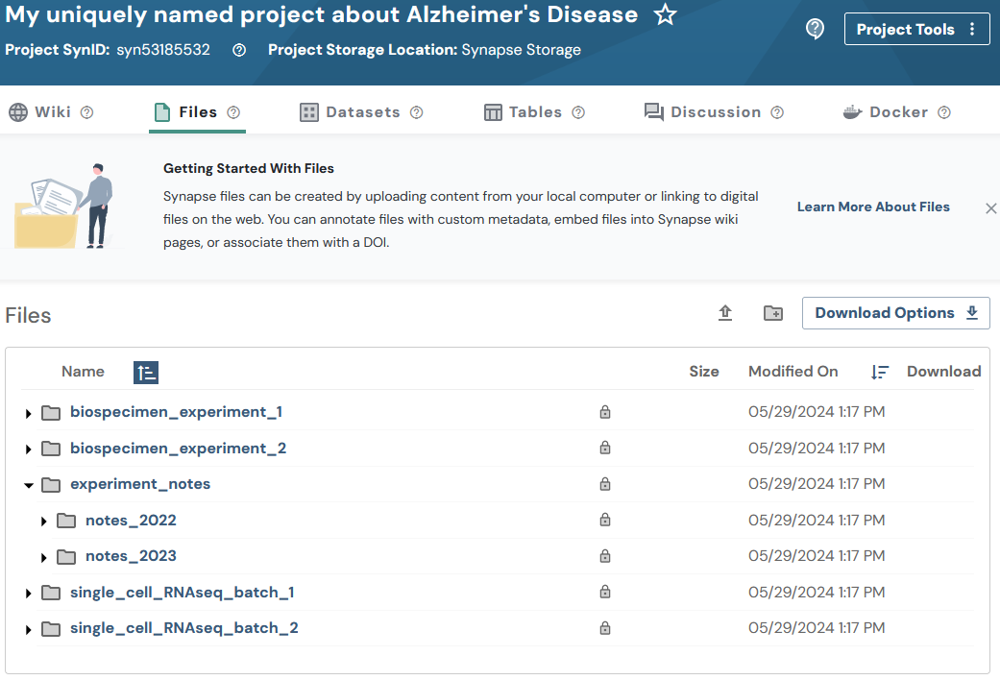

Folders
2026-10-02
folder.RmdOverview
Similar to Projects, Folders are “containers” that offer an additional w ay to organize your data. Instead of uploading a bunch of single files into your project, you can create folders to separate your data in a systematic way.
Folders in Synapse always have a “parent,” which could be a project or another folder. You can organize collections of folders and sub-folders, just as you would on your local computer. See Domain Models of Synapse for more background on Folders.
Note: You may optionally follow the Uploading data in bulk tutorial instead. The bulk tutorial may fit your needs better as it limits the amount of code that you are required to write and maintain.
This vignette follows a mix of Flattened Data Layout and Hierarchy Data Layout. It’s recommended to use one or the other, but not both — both are shown here to demonstrate the flexibility of storing folders within folders on Synapse, following this example layout:
.
├── experiment_notes
│ ├── notes_2022
│ │ ├── fileA.txt
│ │ └── fileB.txt
│ └── notes_2023
│ ├── fileC.txt
│ └── fileD.txt
├── biospecimen_experiment_1
│ ├── fileA.txt
│ └── fileB.txt
├── biospecimen_experiment_2
│ ├── fileC.txt
│ └── fileD.txt
├── single_cell_RNAseq_batch_1
│ ├── SRR12345678_R1.fastq.gz
│ └── SRR12345678_R2.fastq.gz
└── single_cell_RNAseq_batch_2
├── SRR12345678_R1.fastq.gz
└── SRR12345678_R2.fastq.gzIn this tutorial you will:
- Create 4 new folders
- Print stored attributes about a folder
- Create 2 sub-folders
Prerequisites
- Make sure that you have completed the Create a Project step.
Credentials are read from ~/.synapseConfig or the
SYNAPSE_AUTH_TOKEN environment variable. See the Managing Credentials vignette
for setup details.
1. Create a new folder
Folders need a parent — here, a freshly created Project.
my_project <- Project(
name = paste0(
"My uniquely named project about Alzheimer's Disease ",
paste(sample(c(letters, LETTERS, 0:9), 8, replace = TRUE), collapse = "")
)
) |> synStore()
# Create a Folder object and store it
my_scrnaseq_batch_1_folder <- Folder(
name = "single_cell_RNAseq_batch_1",
parent_id = my_project$id
) |> synStore()
my_scrnaseq_batch_2_folder <- Folder(
name = "single_cell_RNAseq_batch_2",
parent_id = my_project$id
) |> synStore()
biospecimen_experiment_1_folder <- Folder(
name = "biospecimen_experiment_1",
parent_id = my_project$id
) |> synStore()
biospecimen_experiment_2_folder <- Folder(
name = "biospecimen_experiment_2",
parent_id = my_project$id
) |> synStore()2. Print stored attributes about your folder
cat("My folder ID is:", my_scrnaseq_batch_1_folder$id, "\n")
cat("The parent ID of my folder is:", my_scrnaseq_batch_1_folder$parent_id, "\n")
cat("I created my folder on:", my_scrnaseq_batch_1_folder$created_on, "\n")
cat("The ID of the user that created my folder is:", my_scrnaseq_batch_1_folder$created_by, "\n")
cat("My folder was last modified on:", my_scrnaseq_batch_1_folder$modified_on, "\n")You’ll see output like:
My folder ID is: syn53205629
The parent ID of my folder is: syn53185532
I created my folder on: 2023-12-28T20:52:50.193Z
The ID of the user that created my folder is: 3481671
My folder was last modified on: 2023-12-28T20:52:50.193Z3. Create 2 sub-folders
Folders can be nested — a folder’s parent_id can be
another folder, not just a project:
hierarchical_root_folder <- Folder(
name = "experiment_notes",
parent_id = my_project$id
) |> synStore()
folder_notes_2023 <- Folder(
name = "notes_2023",
parent_id = hierarchical_root_folder$id
) |> synStore()
folder_notes_2022 <- Folder(
name = "notes_2022",
parent_id = hierarchical_root_folder$id
) |> synStore()Results
Once these folders are created you’ll be able to inspect them on the Files tab of your project in the Synapse web UI. It should look similar to:

References used in this tutorial
Project- synLogin
- synFindEntityId
- synStore